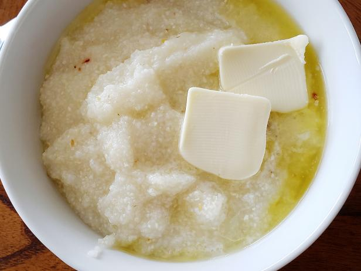

Grit Hub!

Description
These are easy to make grits that anyone can do with a few basic ingredients and 30 minutes.
They are meant to be cheesy and delicious, and eaten alone or paired with other breakfast staples to share with another.
Ingredients
- Grits, 1 cup
- Water 2 cups
- Butter, 1 tablespoon
- Salt, a dash
- pepper, to taste
- Shredded Cheese, to taste
Steps
- Boil 2 cups of water
- When rolling, reduce water to low heat, add grits and cover. Stir while adding to prevent clumping. let cook for 20 minutes
- When water is completely absorbed by grits, add butter and stir
- Add salt, pepper, and cheese to taste
That's really all there is to it!